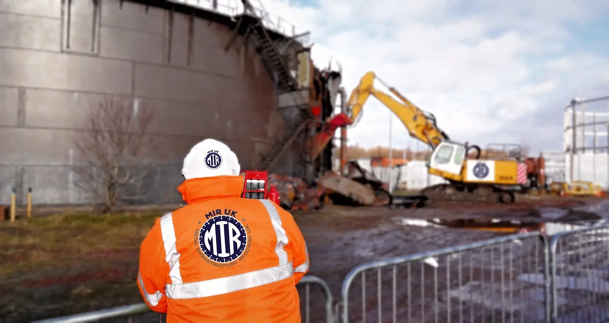
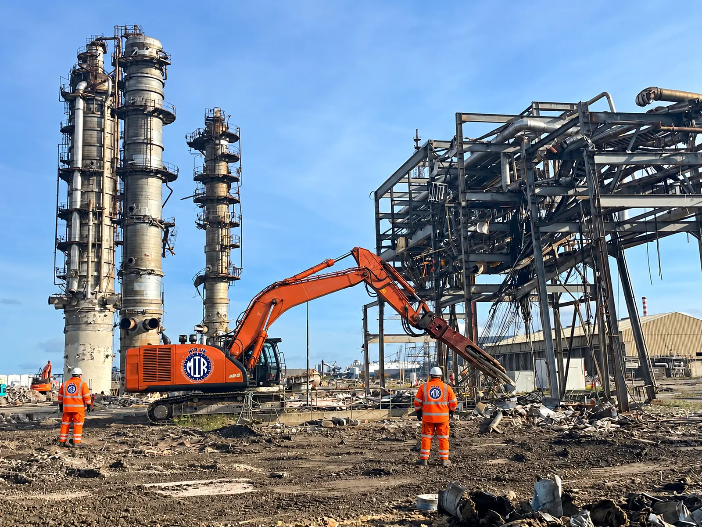

Sample content · UK metal recovery
A new UK metal recovery and dismantling contractor. All wording here is sample content.

Sample content · Client photographs
Sample content. The photographs supplied with the brief.

Client photograph. Refinery dismantling.
Sample content
Colour, type and buttons are set from the metallic logo, so the same look can be applied to the other existing pages.
Sample content · Contact
Sample content. Existing contact details stay as they are.
Sample content · Tokens from the logo
Sampled from the silver and steel in the MIR UK metallic logo, so the same look can be applied to the other existing pages.
Navy from the inner disc of the mark. Silver and steel from the brushed letters and the cutting ring.
Space Grotesk throughout. Body is 18px on desktop and 17px on the phone. Headings are tight and heavy, fitted to the font.
Metal recovery and dismantling.
The work, as photographed.
Style applied to other pages.
A new UK metal recovery and dismantling contractor. All wording here is sample content.
Sample content · UK metal recovery
Get in touch
Minimum height 52px, so labels never clip. Primary is a silver fill from the mark. Ghost is a steel outline for a quieter action.
The same machined silver edge is used on the logo plate, the photograph frame, and the hairline under the nav. A light sheen moves across them, and holds still when reduced motion is preferred.
Logo plate. About 64px tall in the header, 48px on the phone, shown larger here.
Steel hairline. Used under the header and as a quiet section break.